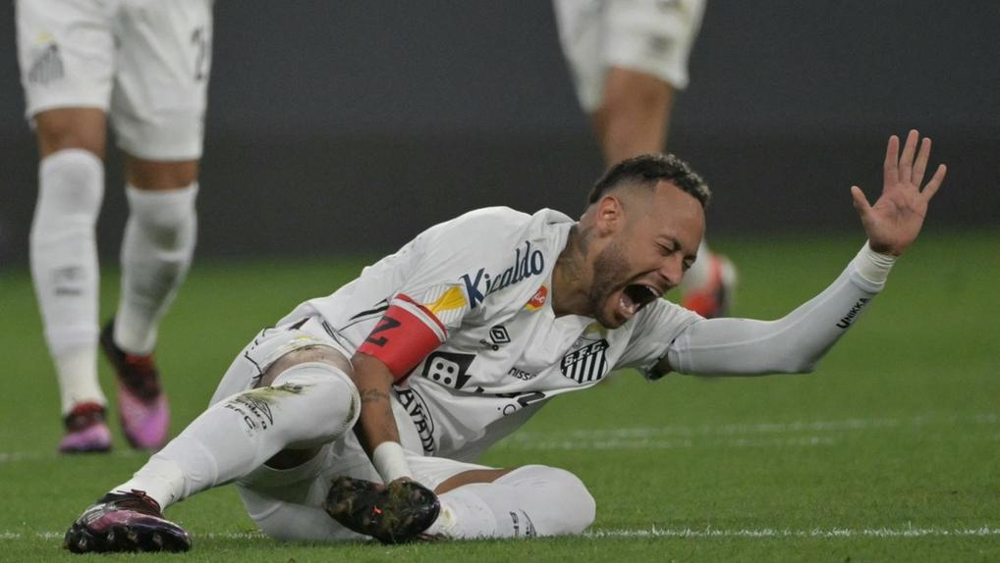

Neymar Jr., um dos maiores ícones do futebol mundial, está passando por mais um desafio em sua carreira. Em março de 2025, durante uma partida decisiva do Campeonato Paulista entre Santos e Corinthians, o jogador sofreu uma lesão no músculo posterior da coxa esquerda, o que causou grande preocupação. O exame realizado posteriormente confirmou um edema na região afetada, levando o jogador a ser cortado da seleção brasileira para os jogos contra a Colômbia e a Argentina. Este imprevisto ocorre em um momento crucial, já que Neymar vem demonstrando um excelente desempenho com a camisa do Santos, após retornar ao futebol brasileiro após anos na Europa, e sua ausência em competições importantes é sempre notada. Atualmente, Neymar se encontra em processo de recuperação, realizando um tratamento intensivo em sua residência, localizada em Mangaratiba, Rio de Janeiro. Sob a supervisão de seu preparador físico, o jogador tem se dedicado a uma rotina de exercícios para acelerar sua recuperação e estar de volta aos campos o mais rápido possível. Embora a previsão inicial seja que ele retorne ao Campeonato Brasileiro na estreia do Santos contra o Vasco da Gama, a lesão ainda pode deixá-lo fora por até seis semanas. A situação gerou uma grande expectativa entre os fãs e a mídia, que acompanham de perto cada passo do craque na sua recuperação.
;Neymar sofreu uma lesão no músculo posterior da coxa esquerda durante a semifinal do Campeonato Paulista contra o Corinthians, em março de 2025. Após exames, foi diagnosticado com um edema na região, o que resultou em sua retirada da convocação da seleção brasileira para os jogos contra a Colômbia e a Argentina. A lesão gerou uma grande preocupação, pois Neymar vinha se destacando tanto no Santos quanto na seleção, e sua ausência foi sentida tanto pelo clube quanto pelos fãs. Atualmente, Neymar está em processo de recuperação intensiva, realizando tratamentos em sua residência, em Mangaratiba, Rio de Janeiro, sob a supervisão de seu preparador físico. O jogador tem compartilhado vídeos de sua rotina de exercícios, mostrando empenho em voltar ao seu melhor. A expectativa é que ele possa retornar aos gramados do Campeonato Brasileiro na estreia do Santos contra o Vasco da Gama, embora a lesão possa mantê-lo afastado por até seis semanas.